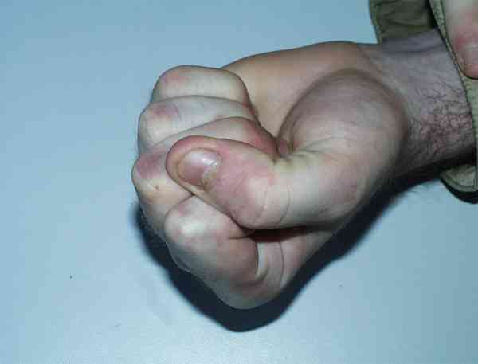
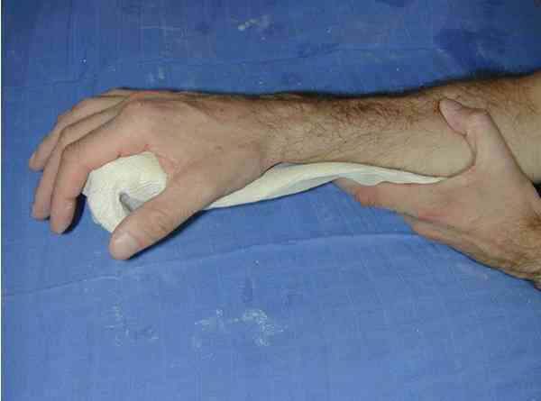

Bienvenue Sur Medical Education
Fractures : métacarpiens M2 à M5
Spécialité : traumatologie /
Points importants
-
Problème majeur : conserver l’enroulement des doigts longs lors de la flexion en paume
-
M2 et M5 sont les deux rayons « libres »
-
Conserver l’anatomie diaphysaire qui garantit l’excavation de la paume de la main
Présentation clinique / CIMU
SIGNES FONCTIONNELS
Présentation clinique / CIMU
SIGNES FONCTIONNELS
Spécifiques
- Douleur du dos de la main lors des mouvements de flexion-extension des MCP
- Déformation localisée en cas de fracture déplacée
- Le plus souvent main globalement augmentée de volume et douloureuse
CONTEXTE
Terrain
- Sujet jeune, actif
Antécédents
- Souvent « récidiviste » de ce genre de traumatisme
Circonstances de survenue
- Accident de sport
- Accident du travail (choc direct)
- « Donneur de coup de poing » dans les murs !
EXAMEN CLINIQUE
M2
- Douleur lors de la prise en pince pouce/index
- Douleur à la palpation du squelette de M2 accessible à la face dorsale
- Effacement du relief de la tête de M2 lors de la fermeture du poing (si elle est possible)
M3 M4
- Main globalement augmentée de volume (hématome de la face dorsale)
- Effacement possible du relief des têtes des métacarpiens
- Déficit douloureux de la fermeture du poing
- Rechercher un défaut d’enroulement
M5
- Douleur à la palpation du squelette de M5
- Hématome du tranchant de la main et de la face dorsale de M5
- Rechercher clinodactylie et défaut d’enroulement
 _720 Photo Recherche d'une clinodactylie et défaut d'enroulement
_918
- - -
Examen clinique de la main
Radiographies de la main face et profil (3/4)
Siège
Déplacement
Trait
Stabilisation initiale

_721
Attelle palmaire à visée antalgique
_882
- - -
Gantelet plâtré prenant P1
Auteur(s) : Michel SCEPI
EXAMENS PARACLINIQUES SIMPLES
Signes paracliniques
IMAGERIE
Traitement
TRAITEMENT / INTRAHOSPITALIER
MEDICAMENTS
Devenir / orientation
CRITERES D’ADMISSION
CRITERES DE SORTIE
ORDONNANCE DE SORTIE
Bibliographie